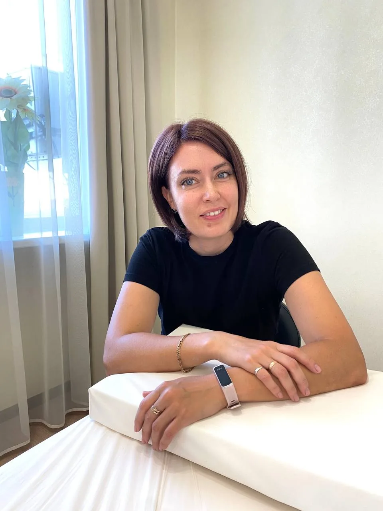
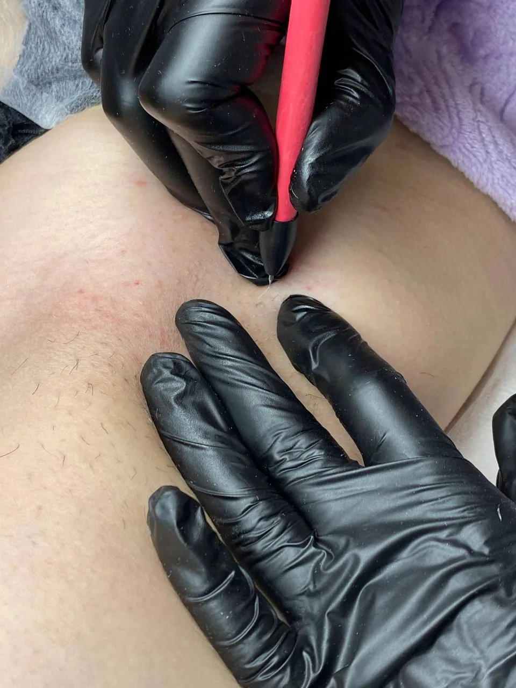
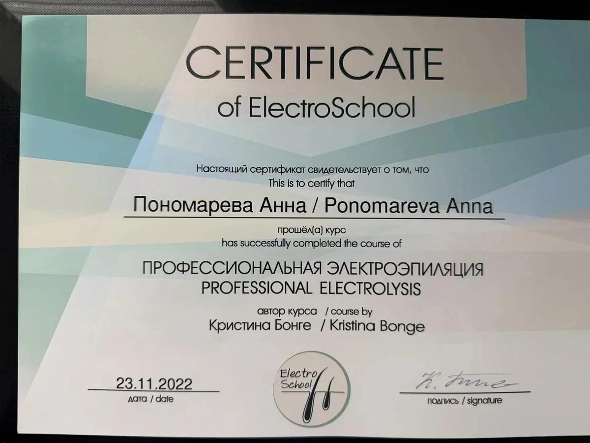

Убираю лишние волосы на лице, в бикини, на контуре бороды и в подмышках — женщинам и мужчинам
Есть противопоказания — обсудим их на бесплатной консультации

Анна Пономарёва
мастер электроэпиляции, Полевской
Для кого
Работаю с женщинами и мужчинами — с любым цветом волос, в том числе светлыми и седыми
Подбородок и над губой: выщипываете каждую неделю, а они возвращаются
Зона бикини: после бритья раздражение и вросшие волоски
Контур на щеках и шее зарастает через день после бритья
Подмышки: бритьё натирает кожу, а волосы растут снова
Лазер не берёт светлые и седые волосы, а электроэпиляция работает с любыми
Что получите
Электроэпиляция работает с каждым волосом отдельно: игла подводит ток к луковице, и она больше не даёт волос
ток разрушает луковицу, а не срезает волос
на бесплатной консультации скажу, сколько примерно минут и визитов понадобится
что делать с кожей после процедуры и между визитами, на руки или в MAX
новая для каждого клиента, вскрывается при вас
платите за минуты работы, а не за зону: 20 минут и игла — 850 ₽

Как это работает
договариваемся о времени бесплатной консультации и пробы
смотрю кожу и волосы, спрашиваю о противопоказаниях и обрабатываю небольшой участок: вы чувствуете, как это
тонкая игла входит в канал волоса, короткий импульс тока разрушает луковицу, волосок выходит пинцетом без усилия
берём волоски, которые проснулись позже
Обо мне
Анна Пономарёва · мастер электроэпиляции, Полевской
Занимаюсь электроэпиляцией с 2021 года. В 2022 году прошла курс «Профессиональная электроэпиляция» в школе Кристины Бонге — у меня сертификат мастера. Работаю на аппарате «Шмель 1000». Принимаю женщин и мужчин, каждого веду сама, без помощниц — от консультации до последнего визита

Частые вопросы
Чувствительность у всех разная. Кто-то спокойно лежит в телефоне, смотрит сериал или болтает со мной всю процедуру. На бесплатных 15 минутах вы поймёте, как это у вас
Волос у всех разное количество, поэтому платите только за минуты работы: 35 ₽ за минуту и 150 ₽ за одноразовую иглу
Зависит от зоны и густоты волос. Примерно скажу на консультации, приходят раз в 3–4 недели
Отрастите волоски хотя бы до 5 мм: перед визитом их не брейте и не выщипывайте
Нет, между визитами волоски можно только подстригать
Да, электроэпиляция работает с волосами любого цвета
Сразу после процедуры только покраснение, оно проходит примерно за час
Полевской, Больничный переулок, 3/7
Противопоказания
Имеются противопоказания — перед первой процедурой обсудим их на бесплатной консультации
процедуру не делаем
процедуры переносим на после родов
только с разрешения лечащего врача
эти места обходим или ждём, пока кожа заживёт
обсуждаем на консультации
переносим визит до выздоровления
Цена
Одна цена для женщин и мужчин, без доплат за зону — считаем только время работы и иглу
15 минут любой зоны, смотрю кожу и отвечаю на вопросы
любая зона: лицо, бикини, контур бороды, подмышки
новая для каждого клиента, вскрывается при вас; одной хватает на визит до 4 часов
30 минут работы и одна игла
30 × 35 ₽ + 150 ₽ за иглу
Первый шаг
Визиты идут раз в 3–4 недели, поэтому чем раньше первый, тем раньше вы увидите разницу
Консультация ни к чему не обязывает, оплачивается только игла — 150 ₽
Мастер электроэпиляции, Полевской